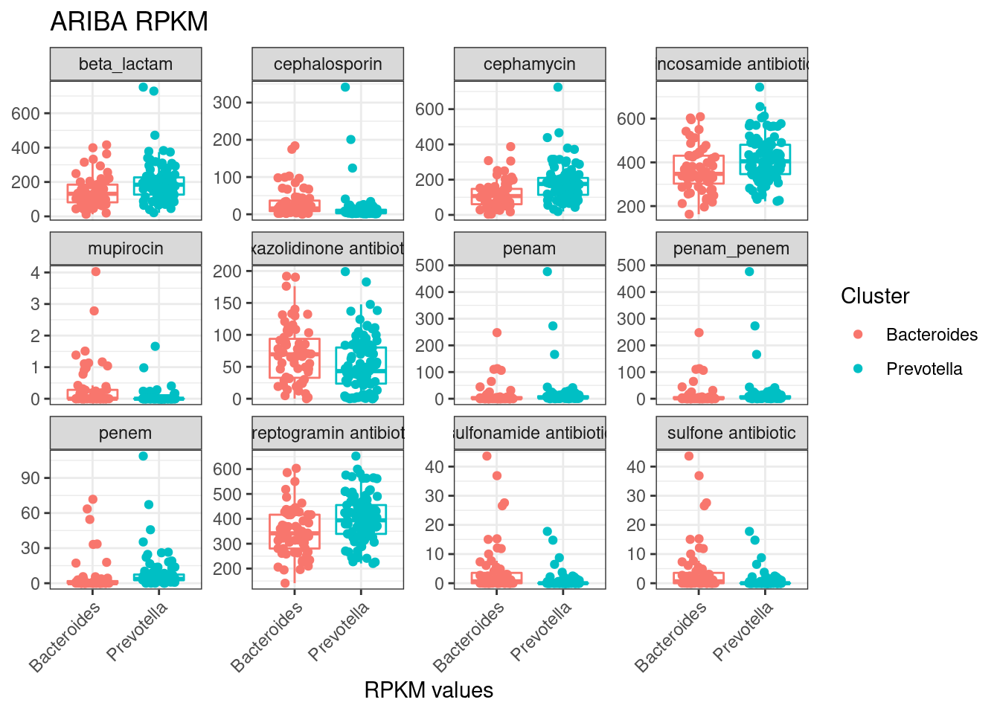

10_grouped_significance
Elisa_Linux
2022-11-10
Last updated: 2022-11-21
Checks: 7 0
Knit directory: 2022_Rubio_MetaHIV/
This reproducible R Markdown analysis was created with workflowr (version 1.7.0). The Checks tab describes the reproducibility checks that were applied when the results were created. The Past versions tab lists the development history.
Great! Since the R Markdown file has been committed to the Git repository, you know the exact version of the code that produced these results.
Great job! The global environment was empty. Objects defined in the global environment can affect the analysis in your R Markdown file in unknown ways. For reproduciblity it’s best to always run the code in an empty environment.
The command set.seed(20220202) was run prior to running
the code in the R Markdown file. Setting a seed ensures that any results
that rely on randomness, e.g. subsampling or permutations, are
reproducible.
Great job! Recording the operating system, R version, and package versions is critical for reproducibility.
Nice! There were no cached chunks for this analysis, so you can be confident that you successfully produced the results during this run.
Great job! Using relative paths to the files within your workflowr project makes it easier to run your code on other machines.
Great! You are using Git for version control. Tracking code development and connecting the code version to the results is critical for reproducibility.
The results in this page were generated with repository version ad16f39. See the Past versions tab to see a history of the changes made to the R Markdown and HTML files.
Note that you need to be careful to ensure that all relevant files for
the analysis have been committed to Git prior to generating the results
(you can use wflow_publish or
wflow_git_commit). workflowr only checks the R Markdown
file, but you know if there are other scripts or data files that it
depends on. Below is the status of the Git repository when the results
were generated:
Ignored files:
Ignored: .Rhistory
Ignored: .Rproj.user/
Ignored: output/aribaData/
Ignored: output/grootData/
Note that any generated files, e.g. HTML, png, CSS, etc., are not included in this status report because it is ok for generated content to have uncommitted changes.
These are the previous versions of the repository in which changes were
made to the R Markdown
(analysis/10_grouped_significance.Rmd) and HTML
(docs/10_grouped_significance.html) files. If you’ve
configured a remote Git repository (see ?wflow_git_remote),
click on the hyperlinks in the table below to view the files as they
were in that past version.
| File | Version | Author | Date | Message |
|---|---|---|---|---|
| Rmd | ad16f39 | Elisa_Linux | 2022-11-18 | log2 fold change (manual calculation) |
| Rmd | fee17bd | Elisa | 2022-11-13 | Gene richness, ART and grouped riskgroup2 analysis. |
| html | fee17bd | Elisa | 2022-11-13 | Gene richness, ART and grouped riskgroup2 analysis. |
| Rmd | 268283f | Elisa_Linux | 2022-11-10 | grouped significane |
library(tidyverse)
library(kableExtra)
library(vegan)
library(ggpubr)
library(glue)
library(patchwork)
library(ggstatsplot)
library(broom)Load data
load("output/summarized_ariba.RDA")
##load("output/rarefied_ariba.RDA")
load("output/grouped_rpkm_ariba.RDA")
load("output/grouped_rar_ariba.RDA")
metadata<-read_csv("data/Metadata/metadata.csv")Test each AMR gene separatedly for clinical variable (function)
Dicotomic variable and factor (>2 levels) function
sig_group_clin_dic<-function(data, metadata, clin_var){
##transpose data
group_name<-pull(data, 1)
data<-as_tibble(cbind(SampleID = names(data), t(data)))%>%slice(-1)%>%
mutate_at(vars(-("SampleID")),as.numeric)
colnames(data)<-c("SampleID", group_name)
##merge data with metadata
data_all<-data%>%
pivot_longer(-SampleID, names_to = "group_name", values_to = "value")%>%
inner_join(., metadata, by="SampleID")
##get significant groups, adjusted p value
sig_amr<-data_all%>%
nest(data=-group_name)%>%
mutate(test=map(.x=data, ~wilcox.test(value~!!ensym(clin_var), data=.x)%>%tidy))%>%
unnest(test)%>%
mutate(p.adjust=p.adjust(p.value, method = "BH"))%>%
filter(p.adjust<0.05)%>%
select(group_name, p.adjust)
##obtain data only from significant groups (for the plot)
data_all<-data_all%>%
inner_join(sig_amr, by="group_name")
##get log2 fold change
log_data<-data_all%>%
group_by(group_name, !!enquo(clin_var))%>%
summarise(mean_counts=mean(value), .groups = 'drop')%>%
pivot_wider(names_from = quo_name(enquo(clin_var)), values_from = "mean_counts")%>%
as.data.frame()
log_data$log2f<-log2(log_data[ ,2])-log2(log_data[ ,3])
log_data<-log_data%>%select(group_name, log2f)
## get median counts per significant group and clinical variable
sig_data<-data_all%>%
group_by(group_name, !!enquo(clin_var))%>%
summarise(median_counts=median(value), .groups = 'drop')%>%
pivot_wider(names_from = quo_name(enquo(clin_var)), values_from = "median_counts")%>%
inner_join(sig_amr, by="group_name")%>%
inner_join(log_data, by="group_name")
res<-list(data_all, sig_data)
names(res)<-c("data_plot", "sig_data")
return(res)
}
sig_group_clin_factor<-function(data, metadata, clin_var){
##transpose data
group_name<-pull(data, 1)
data<-as_tibble(cbind(SampleID = names(data), t(data)))%>%slice(-1)%>%
mutate_at(vars(-("SampleID")),as.numeric)
colnames(data)<-c("SampleID", group_name)
##merge data with metadata
data_all<-data%>%
pivot_longer(-SampleID, names_to = "group_name", values_to = "value")%>%
inner_join(., metadata, by="SampleID")
##get significant groups, adjusted p value
sig_amr<-data_all%>%
nest(data=-group_name)%>%
mutate(test=map(.x=data, ~kruskal.test(value~!!ensym(clin_var), data=.x)%>%tidy))%>%
unnest(test)%>%
mutate(p.adjust=p.adjust(p.value, method = "BH"))%>%
filter(p.adjust<0.05)%>%
select(group_name, p.adjust)
##obtain data only from significant groups (for the plot)
data_all<-data_all%>%
inner_join(sig_amr, by="group_name")
## get mean counts per significant group and clinical variable
sig_data<-data_all%>%
group_by(group_name, !!enquo(clin_var))%>%
summarise(mean_counts=median(value), .groups = 'drop')%>%
pivot_wider(names_from = quo_name(enquo(clin_var)), values_from = "mean_counts")%>%
inner_join(sig_amr, by="group_name")
res<-list(data_all, sig_data)
names(res)<-c("data_plot", "sig_data")
return(res)
}Microbiome Cluster
drugclass_sig_rpkm_cluster<-sig_group_clin_dic(ariba_rpkm_drugclass, filter(metadata, !is.na(Cluster)), Cluster)
drugclass_sig_rpkm_cluster$sig_data%>% kable(caption="**Significant Drug Classes, microbiome cluster (Ariba RPKM**")%>%kable_paper("striped")%>%scroll_box(width = "100%", height = "500px")| group_name | Bacteroides | Prevotella | p.adjust | log2f |
|---|---|---|---|---|
| beta_lactam | 131.3662399 | 184.098917 | 0.0038724 | -0.4214394 |
| cephalosporin | 15.6007980 | 5.515455 | 0.0000052 | 1.0061859 |
| cephamycin | 106.8306067 | 175.534169 | 0.0000876 | -0.6433642 |
| lincosamide antibiotic | 347.4065160 | 404.744738 | 0.0200001 | -0.1735322 |
| mupirocin | 0.0000000 | 0.000000 | 0.0015542 | 2.6188337 |
| oxazolidinone antibiotic | 69.5715971 | 43.228885 | 0.0252534 | 0.4357409 |
| penam | 1.5827140 | 3.914661 | 0.0001776 | -0.3248412 |
| penem | 0.0000000 | 3.693940 | 0.0000000 | -0.6554197 |
| streptogramin antibiotic | 341.6890906 | 394.068241 | 0.0038724 | -0.2067510 |
| sulfonamide antibiotic | 0.6303204 | 0.000000 | 0.0001332 | 2.4048129 |
| sulfone antibiotic | 0.6303204 | 0.000000 | 0.0001332 | 2.4048129 |
drugclass_sig_rpkm_cluster$data_plot%>%
ggplot(aes(x=Cluster, y=value, color=Cluster)) +
geom_boxplot(outlier.shape = NA, show.legend = FALSE)+
geom_jitter(position = position_jitterdodge(dodge.width = 0.8,
jitter.width = 0.5))+
facet_wrap(~group_name, scales = "free_y")+
labs(x= "RPKM values", y=NULL, title="ARIBA RPKM") +
theme_bw()+
theme(axis.text.x = element_text(angle=45, hjust = 1))
| Version | Author | Date |
|---|---|---|
| fee17bd | Elisa | 2022-11-13 |
# drugclass_sig_rar_cluster<-sig_group_clin_dic(ariba_rar_drugclass, filter(metadata, !is.na(Cluster)), Cluster)
# drugclass_sig_rar_cluster$sig_datagenefamily_sig_rpkm_cluster<-sig_group_clin_dic(ariba_rpkm_genefamily, filter(metadata, !is.na(Cluster)), Cluster)
genefamily_sig_rpkm_cluster$sig_data%>% kable(caption="**Significant Gene Families, microbiome cluster (Ariba RPKM**")%>%kable_paper("striped")%>%scroll_box(width = "100%", height = "500px")| group_name | Bacteroides | Prevotella | p.adjust | log2f |
|---|---|---|---|---|
| 23S rRNA with mutation conferring resistance to macrolide antibiotics | 111.6913176 | 142.343377 | 0.0000005 | -0.3841650 |
| 23S rRNA with mutation conferring resistance to pleuromutilin antibiotics | 20.5763970 | 28.098596 | 0.0000000 | -0.4239020 |
| ABC-F ATP-binding cassette ribosomal protection protein | 10.1433504 | 2.374035 | 0.0000001 | 1.7969077 |
| ACI beta-lactamase | 0.0000000 | 3.415643 | 0.0000000 | -1.6838920 |
| ANT(3’’) | 0.0000000 | 0.000000 | 0.0365106 | 1.7255273 |
| ANT(6) | 4.2758038 | 17.186902 | 0.0025673 | -0.5608257 |
| antibiotic-resistant isoleucyl-tRNA synthetase (ileS) | 0.0000000 | 0.000000 | 0.0025673 | 2.6188337 |
| APH(3’’) | 0.0000000 | 0.000000 | 0.0002482 | 4.8809105 |
| APH(6) | 0.0000000 | 0.000000 | 0.0000948 | 4.8224637 |
| CblA beta-lactamase | 13.4618405 | 0.000000 | 0.0000000 | 4.3261959 |
| cepA beta-lactamase | 0.0000000 | 0.000000 | 0.0106081 | 1.3550401 |
| CfxA beta-lactamase | 106.8306067 | 173.868940 | 0.0000664 | -0.6604477 |
| Erm 23S ribosomal RNA methyltransferase | 84.6856070 | 113.940464 | 0.0488201 | -0.4163069 |
| major facilitator superfamily (MFS) antibiotic efflux pump | 37.1080088 | 8.315777 | 0.0000000 | 1.4340403 |
| sulfonamide resistant sul | 0.6303204 | 0.000000 | 0.0000059 | 3.5447399 |
genefamily_sig_rpkm_cluster$data_plot%>%
ggplot(aes(x=Cluster, y=value, color=Cluster)) +
geom_boxplot(outlier.shape = NA, show.legend = FALSE)+
geom_jitter(position = position_jitterdodge(dodge.width = 0.8,
jitter.width = 0.5))+
facet_wrap(~group_name, scales = "free_y")+
labs(x= "RPKM values", y=NULL, title="ARIBA RPKM") +
theme_bw()+
theme(axis.text.x = element_text(angle=45, hjust = 1))
| Version | Author | Date |
|---|---|---|
| fee17bd | Elisa | 2022-11-13 |
resmec_sig_rpkm_cluster<-sig_group_clin_dic(ariba_rpkm_resmec, filter(metadata, !is.na(Cluster)), Cluster)
resmec_sig_rpkm_cluster$sig_data%>% kable(caption="**Significant Resistance Mechanisms, microbiome cluster (Ariba RPKM**")%>%kable_paper("striped")%>%scroll_box(width = "100%", height = "500px")| group_name | Bacteroides | Prevotella | p.adjust | log2f |
|---|---|---|---|---|
| antibiotic efflux | 38.57237 | 9.042412 | 0.0000000 | 0.9214189 |
| antibiotic target alteration | 469.47390 | 537.747430 | 0.0004637 | -0.2558730 |
| antibiotic target protection | 221.37661 | 193.453460 | 0.0184024 | 0.2175991 |
resmec_sig_rpkm_cluster$data_plot%>%
ggplot(aes(x=Cluster, y=value, color=Cluster)) +
geom_boxplot(outlier.shape = NA, show.legend = FALSE)+
geom_jitter(position = position_jitterdodge(dodge.width = 0.8,
jitter.width = 0.5))+
facet_wrap(~group_name, scales = "free_y")+
labs(x= "RPKM values", y=NULL, title="ARIBA RPKM") +
theme_bw()+
theme(axis.text.x = element_text(angle=45, hjust = 1))
| Version | Author | Date |
|---|---|---|
| fee17bd | Elisa | 2022-11-13 |
Risk Group
drugclass_sig_rpkm_riskgroup<-sig_group_clin_factor(ariba_rpkm_drugclass, metadata, RiskGroup2)
drugclass_sig_rpkm_riskgroup$sig_data %>% kable(caption="**Significant Drug Classes, riskgroup2 (Ariba RPKM**")%>%kable_paper("striped")%>%scroll_box(width = "100%", height = "500px")| group_name | hts | msm | pwid | p.adjust |
|---|---|---|---|---|
| cephalosporin | 19.941809 | 5.963062 | 11.8601206 | 0.0000679 |
| cephamycin | 113.951321 | 167.577520 | 98.4646945 | 0.0094542 |
| disinfecting agents and intercalating dyes | 0.000000 | 0.000000 | 0.0000000 | 0.0188046 |
| mupirocin | 0.000000 | 0.000000 | 0.2009783 | 0.0003371 |
| oxazolidinone antibiotic | 74.315667 | 42.886576 | 65.2163890 | 0.0142983 |
| penam | 1.582714 | 4.044615 | 0.7269394 | 0.0003371 |
| penem | 0.000000 | 3.693940 | 0.0000000 | 0.0000000 |
| sulfonamide antibiotic | 1.032192 | 0.000000 | 0.6714252 | 0.0001575 |
| sulfone antibiotic | 1.032192 | 0.000000 | 0.6714252 | 0.0001575 |
my_comparisons <- list( c("hts", "msm"), c("hts", "pwid"), c("msm", "pwid"))
drugclass_sig_rpkm_riskgroup$data_plot%>%
ggplot(aes(x=RiskGroup2, y=value, color=RiskGroup2)) +
geom_boxplot(outlier.shape = NA, show.legend = FALSE)+
geom_jitter(position = position_jitterdodge(dodge.width = 0.8,
jitter.width = 0.5))+
stat_compare_means(comparisons = my_comparisons)+
facet_wrap(~group_name, scales = "free_y")+
labs(x= "RPKM values", y=NULL, title="ARIBA RPKM") +
theme_bw()+
theme(axis.text.x = element_text(angle=45, hjust = 1))
| Version | Author | Date |
|---|---|---|
| fee17bd | Elisa | 2022-11-13 |
genefamily_sig_rpkm_riskgroup<-sig_group_clin_factor(ariba_rpkm_genefamily, metadata, RiskGroup2)
genefamily_sig_rpkm_riskgroup$sig_data %>% kable(caption="**Significant Gene Families, riskgroup2 (Ariba RPKM**")%>%kable_paper("striped")%>%scroll_box(width = "100%", height = "500px")| group_name | hts | msm | pwid | p.adjust |
|---|---|---|---|---|
| 16s rRNA with mutation conferring resistance to aminoglycoside antibiotics | 98.376287 | 126.090699 | 110.5089251 | 0.0351688 |
| 23S rRNA with mutation conferring resistance to macrolide antibiotics | 108.932794 | 142.343377 | 121.1654733 | 0.0000017 |
| 23S rRNA with mutation conferring resistance to pleuromutilin antibiotics | 20.714517 | 27.898481 | 19.4406012 | 0.0000008 |
| ABC-F ATP-binding cassette ribosomal protection protein | 11.976600 | 2.268907 | 28.9858257 | 0.0000000 |
| ACI beta-lactamase | 0.000000 | 3.298008 | 0.0000000 | 0.0000000 |
| ANT(3’’) | 0.000000 | 0.000000 | 0.0000000 | 0.0018898 |
| ANT(6) | 3.560186 | 16.398407 | 11.5275720 | 0.0198326 |
| antibiotic-resistant isoleucyl-tRNA synthetase (ileS) | 0.000000 | 0.000000 | 0.2009783 | 0.0006449 |
| APH(3’’) | 0.000000 | 0.000000 | 0.0000000 | 0.0014555 |
| APH(6) | 0.000000 | 0.000000 | 0.0000000 | 0.0018898 |
| CblA beta-lactamase | 16.716820 | 0.000000 | 11.8601206 | 0.0000000 |
| cepA beta-lactamase | 0.000000 | 0.000000 | 0.0000000 | 0.0182554 |
| CfxA beta-lactamase | 113.951321 | 161.714766 | 95.7705973 | 0.0129576 |
| lincosamide nucleotidyltransferase (LNU) | 7.845180 | 3.282264 | 9.7672929 | 0.0228837 |
| major facilitator superfamily (MFS) antibiotic efflux pump | 40.324318 | 8.315777 | 37.4544838 | 0.0000000 |
| sulfonamide resistant sul | 1.032192 | 0.000000 | 0.6714252 | 0.0000064 |
genefamily_sig_rpkm_riskgroup$data_plot%>%
ggplot(aes(x=RiskGroup2, y=value, color=RiskGroup2)) +
geom_boxplot(outlier.shape = NA, show.legend = FALSE)+
geom_jitter(position = position_jitterdodge(dodge.width = 0.8,
jitter.width = 0.5))+
facet_wrap(~group_name, scales = "free_y")+
labs(x= "RPKM values", y=NULL, title="ARIBA RPKM") +
theme_bw()+
theme(axis.text.x = element_text(angle=45, hjust = 1))
| Version | Author | Date |
|---|---|---|
| fee17bd | Elisa | 2022-11-13 |
resmec_sig_rpkm_riskgroup<-sig_group_clin_factor(ariba_rpkm_resmec, metadata, RiskGroup2)
resmec_sig_rpkm_riskgroup$sig_data %>% kable(caption="**Significant Resistance mechanism, riskgroup2 (Ariba RPKM**")%>%kable_paper("striped")%>%scroll_box(width = "100%", height = "500px")| group_name | hts | msm | pwid | p.adjust |
|---|---|---|---|---|
| antibiotic efflux | 41.12293 | 9.042412 | 39.29289 | 0.0000000 |
| antibiotic target alteration | 462.34615 | 529.726590 | 470.87904 | 0.0099536 |
| antibiotic target protection | 227.00208 | 190.664046 | 233.13636 | 0.0021669 |
resmec_sig_rpkm_riskgroup$data_plot%>%
ggplot(aes(x=RiskGroup2, y=value, color=RiskGroup2)) +
geom_boxplot(outlier.shape = NA, show.legend = FALSE)+
geom_jitter(position = position_jitterdodge(dodge.width = 0.8,
jitter.width = 0.5))+
stat_compare_means(comparisons = my_comparisons)+
##stat_compare_means(label.y.npc = 0.9)+
facet_wrap(~group_name, scales = "free_y")+
labs(x= "RPKM values", y=NULL, title="ARIBA RPKM") +
theme_bw()+
theme(axis.text.x = element_text(angle=45, hjust = 1))
| Version | Author | Date |
|---|---|---|
| fee17bd | Elisa | 2022-11-13 |
sessionInfo()R version 4.1.2 (2021-11-01)
Platform: x86_64-pc-linux-gnu (64-bit)
Running under: Ubuntu 22.04 LTS
Matrix products: default
BLAS: /usr/lib/x86_64-linux-gnu/blas/libblas.so.3.10.0
LAPACK: /usr/lib/x86_64-linux-gnu/lapack/liblapack.so.3.10.0
locale:
[1] LC_CTYPE=es_ES.UTF-8 LC_NUMERIC=C
[3] LC_TIME=es_ES.UTF-8 LC_COLLATE=es_ES.UTF-8
[5] LC_MONETARY=es_ES.UTF-8 LC_MESSAGES=es_ES.UTF-8
[7] LC_PAPER=es_ES.UTF-8 LC_NAME=C
[9] LC_ADDRESS=C LC_TELEPHONE=C
[11] LC_MEASUREMENT=es_ES.UTF-8 LC_IDENTIFICATION=C
attached base packages:
[1] stats graphics grDevices utils datasets methods base
other attached packages:
[1] broom_1.0.0 ggstatsplot_0.9.4 patchwork_1.1.1 glue_1.6.2
[5] ggpubr_0.4.0 vegan_2.6-2 lattice_0.20-45 permute_0.9-7
[9] kableExtra_1.3.4 forcats_0.5.1 stringr_1.4.0 dplyr_1.0.9
[13] purrr_0.3.4 readr_2.1.2 tidyr_1.2.0 tibble_3.1.8
[17] ggplot2_3.3.6 tidyverse_1.3.2 workflowr_1.7.0
loaded via a namespace (and not attached):
[1] googledrive_2.0.0 colorspace_2.0-3 ggsignif_0.6.3
[4] ellipsis_0.3.2 rprojroot_2.0.3 parameters_0.18.2
[7] fs_1.5.2 rstudioapi_0.13 farver_2.1.1
[10] bit64_4.0.5 fansi_1.0.3 lubridate_1.8.0
[13] xml2_1.3.3 splines_4.1.2 cachem_1.0.6
[16] knitr_1.39 zeallot_0.1.0 jsonlite_1.8.0
[19] cluster_2.1.2 dbplyr_2.2.1 compiler_4.1.2
[22] httr_1.4.3 backports_1.4.1 assertthat_0.2.1
[25] Matrix_1.4-0 fastmap_1.1.0 gargle_1.2.0
[28] cli_3.3.0 later_1.3.0 htmltools_0.5.3
[31] tools_4.1.2 gtable_0.3.0 Rcpp_1.0.9
[34] carData_3.0-5 cellranger_1.1.0 jquerylib_0.1.4
[37] vctrs_0.4.1 svglite_2.1.0 nlme_3.1-155
[40] insight_0.18.2 xfun_0.31 ps_1.7.1
[43] rvest_1.0.2 lifecycle_1.0.1 rstatix_0.7.1
[46] googlesheets4_1.0.0 getPass_0.2-2 MASS_7.3-55
[49] scales_1.2.0 vroom_1.5.7 hms_1.1.1
[52] promises_1.2.0.1 parallel_4.1.2 rematch2_2.1.2
[55] yaml_2.3.5 sass_0.4.2 stringi_1.7.8
[58] paletteer_1.4.1 highr_0.9 bayestestR_0.12.1
[61] rlang_1.0.4 pkgconfig_2.0.3 systemfonts_1.0.4
[64] evaluate_0.15 labeling_0.4.2 bit_4.0.4
[67] processx_3.7.0 tidyselect_1.1.2 magrittr_2.0.3
[70] R6_2.5.1 generics_0.1.3 DBI_1.1.3
[73] pillar_1.8.0 haven_2.5.0 whisker_0.4
[76] withr_2.5.0 mgcv_1.8-39 datawizard_0.5.1
[79] abind_1.4-5 performance_0.9.2 modelr_0.1.8
[82] crayon_1.5.1 car_3.1-0 utf8_1.2.2
[85] correlation_0.8.2 tzdb_0.3.0 rmarkdown_2.14
[88] grid_4.1.2 readxl_1.4.0 callr_3.7.1
[91] git2r_0.30.1 reprex_2.0.1 digest_0.6.29
[94] webshot_0.5.3 httpuv_1.6.5 statsExpressions_1.3.3
[97] munsell_0.5.0 viridisLite_0.4.0 bslib_0.4.0